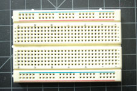
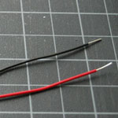
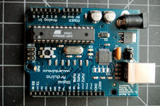
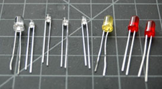
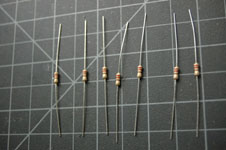
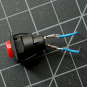
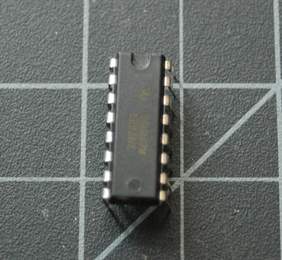
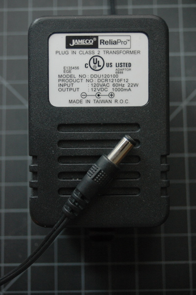
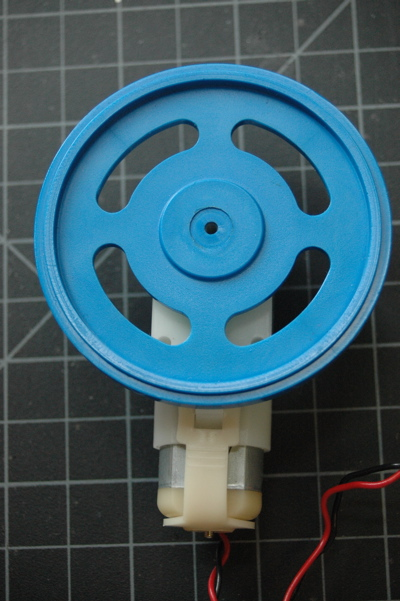
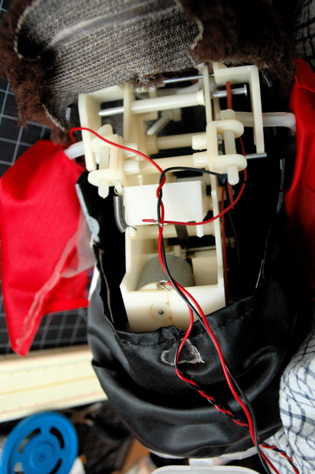

|
Intro to Physical Computing Syllabus Research & Learning Other Class pages
ITP Help Pages |
DC Motor Control Using an H-BridgeOverviewIn this tutorial, you'll learn how to control a DC motor's direction using an H-bridge. To reverse a DC motor, you need to be able to reverse the direction of the current in the motor. The easiest way to do this is using an H-bridge circuit. There are many different models and brands of H-Bridge. This tutorial uses one of the most basic, a Texas Instruments L293NE or a Texas Instruments SN754410. If you simply want to turn a motor on and off, and don't need to reverse it, for example if you're controlling a fan, try the tutorial on controlling high current loads with transistors. Table of Contents (hide) 1. PartsFor this lab you'll need: 
Solderless breadboard 
22-AWG hookup wire 
Arduino Microcontroller module 
Light Emiting Diodes, LED

10Kohm resistors 
Switch 
L293NE or SN754410 H-bridge 
12V DC power supply 
DC Motor
2. Prepare the breadboardConnect power and ground on the breadboard to power and ground from the microcontroller. On the Arduino module, use the 5V and any of the ground connections: (Diagram made with Fritzing - download) 3. Add a Digital Input (a switch)Connect a switch to digital input 2 on the Arduino. (Diagram made with Fritzing - download) 4. Find a motorFind yourself a DC motor that runs on low DC voltage within the range of 5 - 15V. RadioShack often sells several small DC motors, the NYU Computer Store on occasion has small a few, the junk shelf is almost always a goldmine for discarded motors and fans.Asking classmates and second years is another good approach. Solder leads to the motor's terminals. With DC motors, there is no polarity regarding the motor terminals so you can connect it any way you'd like. Optional: Consider testing your motor with a bench power supply from the equipment room. Ask a teacher or resident if you need help setting one up. Begin by adjusting the voltage on the bench power supply and observe its effects. Take note of its speed at different voltages without dipping to low or too high. Running a motor at a voltage much lower or much higher than what it's rated for could potentially damage or permanently destroy your motor. When the motor doesn't spin, the voltage is too low. When the motor runs hot, or sounds like it's straining, the voltage is too high. 5. Set up the H-bridgeThis example uses an H-bridge integrated circuit, the Texas Instruments L293NE or Texas Instruments SN754410. There is one in your Physical Computing Kit, and the NYU Computer Store and many distributors such as Digikey, SparkFun, Mouser and Jameco sell them as well. 6. How your H-bridge worksThe L293NE/SN754410 is a very basic H-bridge. It has two bridges, one on the left side of the chip and one on the right, and can control 2 motors. It can drive up to 1 amp of current, and operate between 4.5V and 36V. The small DC motor you are using in this lab can run safely off a low voltage so this H-bridge will work just fine. The H-bridge has the following pins and features:
Below is a diagram of the H-bridge and which pins do what in our example. Included with the diagram is a truth table indicating how the motor will function according to the state of the logic pins (which are set by our Arduino). For this lab, the enable pin connects to a digital pin
on your Arduino so you can send it either HIGH or LOW and turn the
motor ON or OFF. The motor logic pins also connected to designated
digital pins on your Arduino so you can send it HIGH and LOW to have the
motor turn in one direction, or LOW and HIGH to have it turn in the
other direction. The motor supply voltage connects to the voltage source
for the motor, which is usually an external power supply. If your motor
can run on 5V and less than 500mA, you can use the Arduino's 5V output.
Most motors require a higher voltage and higher current draw than this,
so you might need an external power supply.
7. Connect the motor to the H-bridgeConnect the motor to the H-bridge as follows: (Diagram made with Fritzing - download) Or, if you are using an external power for Arduino, you can use Vin pin. (Diagram made with Fritzing - download) If you need an external power supply, y ou can use any DC power supply or battery from 9 - 15V as long as your motor can run at that voltage, and as long as the supply can supply as much current as your motor needs. Plug an external DC power source into the Arduino's external power input. You may still leave your USB cable plugged in for quick and easy reprogramming. Whichever motor you use, make sure the power source is compatible (i.e. don't use a 9V battery for a 3V motor!). The external voltage input is available at the Vin pin, so you can use it both to power the Arduino, and to power the motor. (Diagram made with Fritzing - download) If you find that your microcontroller is resetting whenever the motor turns on, add a capacitor across power and ground close to the motor. The capacitor will smooth out the voltage dips that occur when the motor turns on. This use of a capacitor is called a decoupling capacitor. Usually a 10 - 100uF capacitor will work. The larger the cap, the more charge it can hold, but the longer it will take to release its charge. 8. Program the MicrocontrollerProgram the microcontroller to run the motor through the H-bridge: const int switchPin = 2; // switch input const int motor1Pin = 3; // H-bridge leg 1 (pin 2, 1A) const int motor2Pin = 4; // H-bridge leg 2 (pin 7, 2A) const int enablePin = 9; // H-bridge enable pin const int ledPin = 13; // LED void setup() { // set the switch as an input: pinMode(switchPin, INPUT); // set all the other pins you're using as outputs: pinMode(motor1Pin, OUTPUT); pinMode(motor2Pin, OUTPUT); pinMode(enablePin, OUTPUT); pinMode(ledPin, OUTPUT); // set enablePin high so that motor can turn on: digitalWrite(enablePin, HIGH); // blink the LED 3 times. This should happen only once. // if you see the LED blink three times, it means that the module // reset itself,. probably because the motor caused a brownout // or a short. blink(ledPin, 3, 100); } void loop() { // if the switch is high, motor will turn on one direction: if (digitalRead(switchPin) == HIGH) { digitalWrite(motor1Pin, LOW); // set leg 1 of the H-bridge low digitalWrite(motor2Pin, HIGH); // set leg 2 of the H-bridge high } // if the switch is low, motor will turn in the other direction: else { digitalWrite(motor1Pin, HIGH); // set leg 1 of the H-bridge high digitalWrite(motor2Pin, LOW); // set leg 2 of the H-bridge low } } /* blinks an LED */ void blink(int whatPin, int howManyTimes, int milliSecs) { int i = 0; for ( i = 0; i < howManyTimes; i++) { digitalWrite(whatPin, HIGH); delay(milliSecs/2); digitalWrite(whatPin, LOW); delay(milliSecs/2); } } Once you've seen this code working, try modifying the speed of the motor using the analogWrite() function, as explained in the Analog Lab. Use analogWrite() on pin 9, the enable pin of the motor, and see what happens as you change the value of the analogWrite(). 9. Get creativeThis is a suggestion for a possible project. You can do any project you wish as long as it demonstrates your mastery of the lab exercises and good physical interaction. Use your motor to make something move, vibrate, rise, fall, roll, creep, or whatever you can think of, in response to user input from a digital input device (switch, floor sensor, tripwire, etc). Look inside moving toys, you'll find a number of excellent motors and gears you can re-purpose. See the innards of a cymbal monkey below as an example. Perhaps you can re-design the user interface to a toy, using the microcontroller to mediate between new sensors on the toy and the motors of the toy. Whatever you build, make sure it reacts in some way to human action. 
|
{kind=link}
{kind=link}
{kind=link}
{kind=link}
{kind=link}
{kind=link}
{kind=link}
{kind=link}
{kind=link}
{kind=link}
{kind=link}
{kind=link}
{kind=link}
{kind=link}
{kind=link}